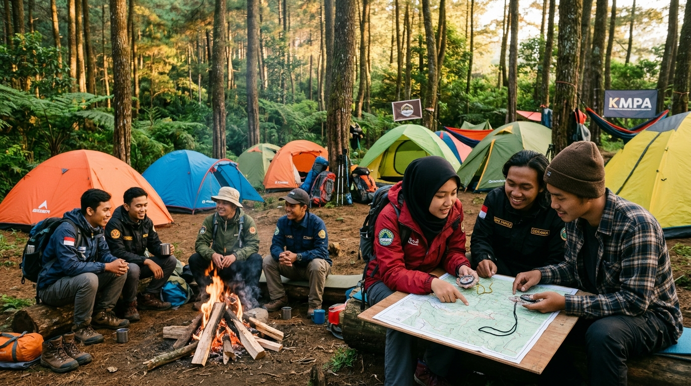
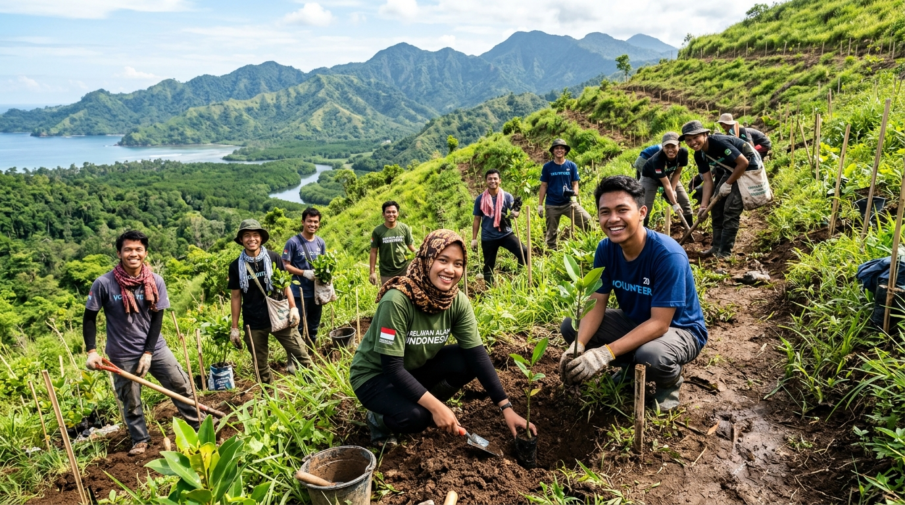

Agenda Kegiatan Mendatang
Ekspedisi Gunung Semeru
Waktu: Mei 2026
Pendakian jalur Ranukumbolo dan observasi ekosistem puncak.
Aksi Tanam 1000 Pohon
Waktu: Juni 2026
Reboisasi daerah aliran sungai dan lereng rawan longsor.
Pendidikan Dasar (DIKSAR)
Waktu: Juli 2026
Pelatihan navigasi darat, survival, dan materi SAR untuk calon anggota baru.
Galeri Dokumentasi
Ekspedisi Puncak Gunung

Latihan Peta & Kompas

Konservasi & Reboisasi